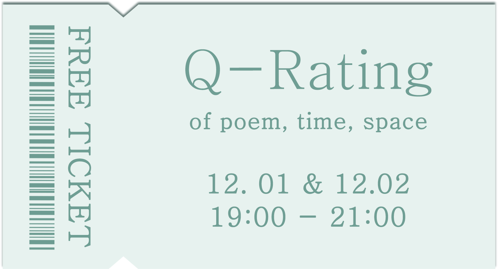

22년, 올해의 끝 무렵.
당신의 시, 공간은 어떠했나요?
4인이 만든 작은 공간에 '당신의 시간'을 초대합니다.
전시 일정 11월 29일 ~ 12월 5일
* 마지막 5일은 전시 정리일로 오후 5시까지 전시합니다.
* 장소가 협소한 관계로 20명, 선착순 입장됩니다.
Ticket Open 11월 21일~ 27일(7일간)
당신의 시, 공간은 어떠했나요?
4인이 만든 작은 공간에 '당신의 시간'을 초대합니다.
전시 일정 11월 29일 ~ 12월 5일
* 마지막 5일은 전시 정리일로 오후 5시까지 전시합니다.
OPEN PARTY
12월 1일 & 2일, 19:00 - 20:30* 장소가 협소한 관계로 20명, 선착순 입장됩니다.
Ticket Open 11월 21일~ 27일(7일간)
